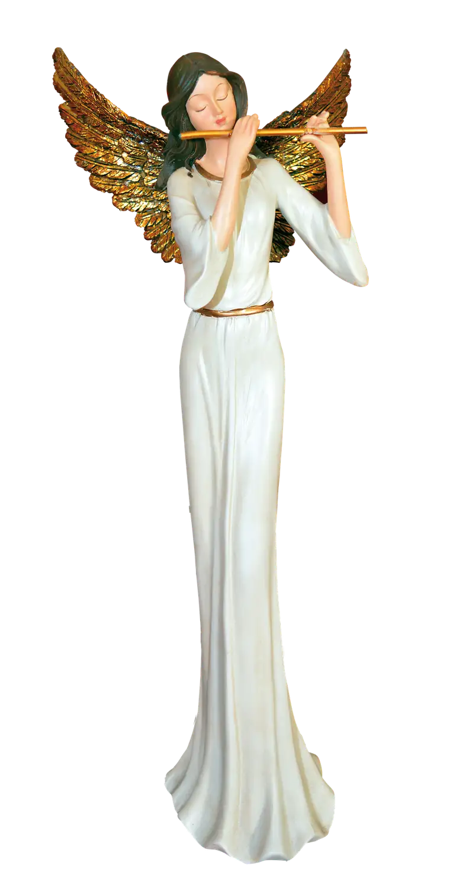
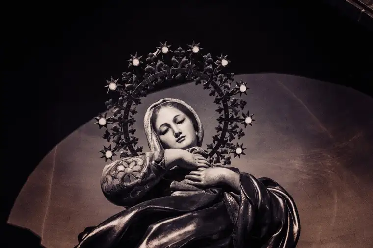

Moving through the Advent season this year, taking in not just the sights but the sounds of the coming of Christ, especially through the gift of Christmas music, it struck me that no other religion has such a profoundly beautiful composite of melodies and harmonies than that which Christianity has inspired, and which is particularly before us in this season.

https://pixabay.com/photos/angel-christmas-angel-figure-music-3792464/
While pondering this, a video came onto my path through social media that caught my attention. The account of this Jewish-by-birth, former atheist professor, who converted to Catholicism after encountering Jesus and Mary on two separate occasions a year apart, affected me deeply, starting my Advent out with a new sense of the love our Lord and his mother have for us all.
Within his account, Roy Schoeman describes, as well as possible in human words, the mystical experience of encountering Mary, remarking that though she was “perfectly beautiful to look at…even more profoundly affecting was the beauty of her voice, which was composed…of that which makes music, music. And when she spoke, and when the beauty of her voice flowed through me, carrying with it her love, it lifted me up into a state of ecstasy…”

https://pixabay.com/photos/virgin-mary-st-church-crown-mass-1907194/
It is so hard for most us to imagine what it might be like to have such an encounter. Most who have described such a heavenly appointment struggle to convey the experience and the characteristics of Our Blessed Mother in human terms. Hearing Schoeman describe Mary’s voice in this way got me closer to knowing what she must be like. I cannot imagine the resonance of her voice, but I can certainly imagine the most beautiful Christmas music I have ever heard and how it might ring with a similar resonance and beauty as her voice in speaking with such pure love. What a captivating thought!
Schoeman also describes how his exchange with Mary included questions he put before her and she answered, and how those questions “flowed out of…being absolutely overwhelmed by who she was, and by her grandeur.” At one point, when he asked how it could be that she was so “glorious, magnificent and exalted,” her response, as he describes it, was “to look down at me almost with pity and shake her head gently and say, ‘Oh no, you don’t understand. I’m nothing. I’m a creature. A created thing. He’s everything.'”
When Schoeman asked Mary what title she prefers for herself, she replied, “I am the beloved daughter of the Father, mother of the Son, and spouse of the Spirit.” She also stated, when asked, that her favorite prayer to her was, “O Mary, conceived without sin, pray for us who have recourse to thee,” uttered in Portuguese.
I found this incredible account quite believable and so beautiful. What Schoeman experienced left him with a burning desire to be near to Mary and Jesus in his Church, which he had now come to believe to be the one holy, Catholic and apostolic Church.
I think you will feel as blessed as I have in listening to Schoeman’s account, which, at the start of this Advent, enlivened my faith powerfully, restored hope in my heart, and caused me to think about Our Blessed Mother in a new and even more endearing and grateful light than ever before. I saw anew how she is truly a vessel to her Son, our Lord, a creature whose sole mission is to bring God to us and glorify Him, that we might do the same.
But most of all, I am left thinking about all the beautiful music I have heard already this season, and that which I will continue to hear to the end of the season. As I do, I will no doubt consider again how Mary’s voice is “composed of that which makes music music,” and realize how very blessed we are in having been given this precious gift of faith, and in this broken but beautiful Church Jesus draws us to, not just in Advent or Christmas, but every day of our lives.
Q4U: What new thing did Advent reveal to you this year about our Lord Jesus and His Church?